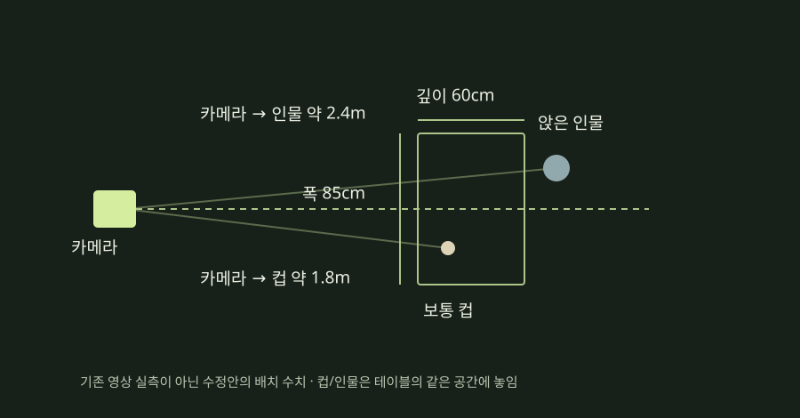
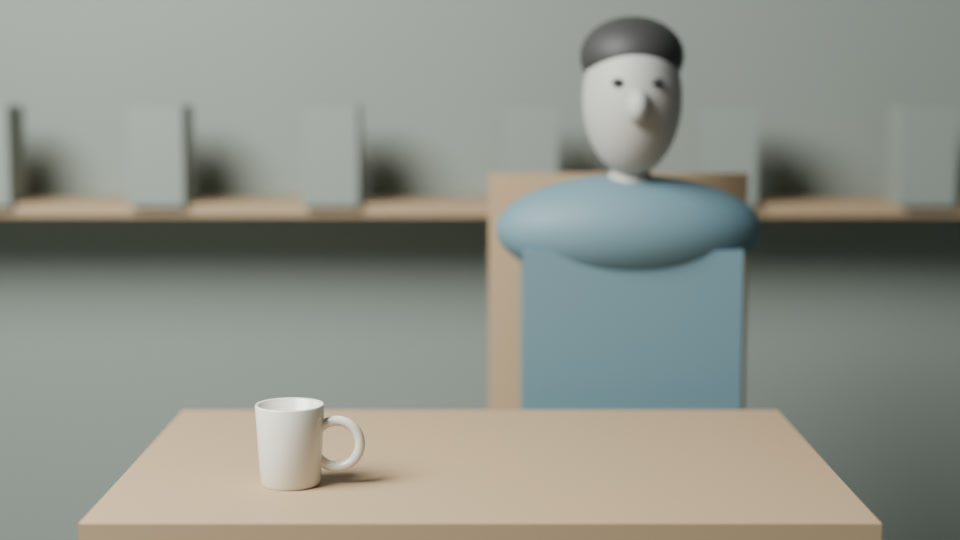
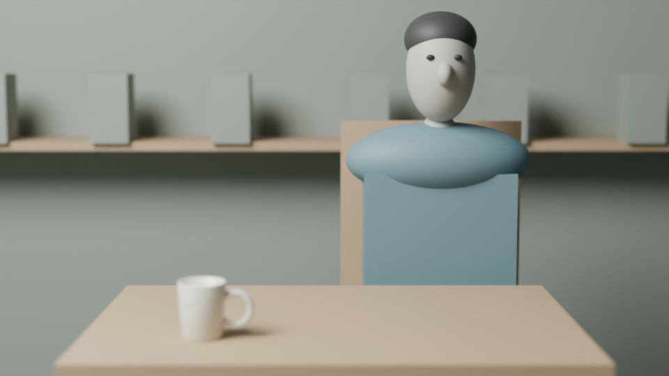

E02 / SPATIAL SCALE REVIEW / 2026.11.19
컵이 커 보인 이유부터
다시 잡습니다.
현재 컵과 인물의 크기 관계가 자연스럽게 읽히지 않는다는 피드백을 반영했습니다. 아래 새 장면은 무료3D 배치 검토용이며 Claire 실사 결과가 아닙니다. 사용자 “상한 조정 승인”을 반영했습니다. 새 재작업 실제 비용은USD0.3766이며 기존 배치와 분리합니다.
초점보다 먼저 확인했어야 할 것

컵 몸통이 보이는 얼굴 너비에 가까운데, 상판의 옆선·뒤쪽 경계와 인물의 앉은 위치가 충분히 연결되지 않습니다. 작은 탁자를 사이에 둔 구도처럼 읽히면서 컵에는 강한 전경 확대가 적용돼, 큰 컵과 작은 인물처럼 느껴질 수 있습니다.
가까운 물체가 크게 보이는 원근 자체는 가능합니다. 이 장면은 그만큼의 거리를 설명할 테이블과 공간 단서가 부족합니다. 기존 검수는 초점과 시선에 치우쳐 이 비례를 놓쳤습니다.
원래3D 도해는 깊이3m의 작업대였지만, 실제 스틸은 짧은 탁자처럼 읽힙니다. 기존 인물 대역도 머리 높이46cm의 단순 형태여서 실제 인체 비례 기준이 아니었습니다. 도해 안의 A/B 위치 일치 확인을 실사 장면의 자연스러운 공간 비례 검수로 대체한 것이 잘못이었습니다.
보통 크기의 컵으로 다시 설계

| 테이블 | 폭85 × 깊이60cm, 높이74cm |
|---|---|
| 컵 | 높이9.5cm, 입구 지름8cm의 보통 컵 |
| 카메라 거리 | 컵 약1.8m / 인물 약2.4m |
| 구도·초점 | 60mm·f/1.4 표현 목표, 카메라 고정 |
| 화면 비율 목표 | 컵 몸통 높이 ≈ 온전한 머리 높이의50–65% |
카메라와 컵 사이 거리를 늘려 컵의 상대 확대를 줄이고, 상판의 앞 모서리·두 옆선·뒷변을 함께 보여 줍니다. 컵을 얼굴만큼 키우지 않아도 초점은 분리할 수 있도록 거리와 심도를 설계했습니다.
기존 입력안의 컵 약1m / 인물 약2.4m는 강한 거리비였습니다. 수정안은 약1.8m /2.4m입니다. 렌즈 수치만 바꾸는 것이 아니라 카메라와 피사체 배치를 함께 바꿉니다. 이 수치는3D 계획값이며 기존 AI 영상의 실측값이나 새 생성 결과의 보장이 아닙니다.
크기는 그대로, 초점만 바꾸기


3D에서 컵 몸통의 화면 높이는 머리 대역 높이의 약60%입니다. 두 장의 물체·카메라·광원은 같고 초점 거리만 다릅니다. 실제 새 사진은 컵/머리 화면 높이가 약1/3로 계획보다 작고 앞 모서리가 모두 보이지는 않습니다. 정상 컵 크기·상판 연결의 자연스러움을 우선해 초안 입력으로 선택했습니다. 수치 일치로 통과한 것은 아닙니다.
대역의 얼굴·몸은 공간 배치용 단순 형태입니다. 실사 인물 비율이나 연기 품질 검증으로 보지 않습니다.
수정 스틸·영상 입력안
새 시작 스틸
A photographed live-action frame. Use reference image1 only for the same adult Korean woman’s face, black hair and bangs, earrings and blue-gray shirt; do not inherit its portrait crop or plain background. Natural skin and cloth at this distance, without reshaping, uniform pores or retouching. Claire sits on a chair just behind the far edge of an ordinary rectangular timber table in a quiet workshop. The table is about85cm wide and60cm deep, with a tabletop about74cm above the floor. Show its front corners, both receding side edges and the rear edge immediately in front of her torso so one continuous shared tabletop is unmistakable. A normal small cream ceramic cup, about9.5cm high and8cm across the rim, rests on the near-left part of this same table. The whole cup and handle are inside frame, with visible wood around the contact point. Its body is about half the height of Claire’s full visible head, not face-sized. Claire’s head, including the top of her hair, remains wholly inside the upper-right part of the frame. Her hands rest out of view. The camera is outside the front edge, at about seated-eye height and far enough back for a moderate perspective: roughly1.8m to the cup and2.4m to Claire. A60mm lens look gives a medium view across the table, with the tabletop depth visible rather than filling the entire lower frame. Claire looks at the actual camera lens with relaxed closed lips. Focus sharply on the near cup rim and handle; Claire is softly defocused behind it while her identity and silhouette remain recognizable. One soft side window lights both subjects consistently. Quiet shelves behind her. No text, logos, steam, extra cups or oversized props.
영상 공통
One continuous six-second live-action shot starting at the supplied new photographic frame. Keep the normal cup scale, table geometry, contact point, face, camera framing, light and exposure unchanged. Claire keeps her gaze on the actual stationary camera lens with brief natural blinks and quiet nasal breathing; her head and chin keep the first-frame orientation, her lips relaxed, and she does not look down at the cup. The cup, chair and table remain still. The camera is physically locked, without push-in, zoom, cuts or scale changes. Native sound for this individual take: low workshop room tone and quiet breath across the full clip, without speech, music or a focus-motor effect.
A · 컵 초점 고정
Keep only the foreground cup rim and handle sharply focused for the entire shot. The face behind stays softly defocused. No focus change.
B · 눈으로 초점 이동
Hold the near cup focus for0–2s. During2–3s, make one smooth optical focus pull onto Claire’s eyes, allowing the cup to become soft. Hold eye focus for3–6s. No face morphing, object movement or camera movement.
재작업 순서와 견적
- 기존 잘못된 장면을 구도 참조로 쓰지 않고, Claire 신원 참조로 새 공통 스틸1장 생성
- 컵 크기·상판 연결·접촉·머리 여백을 원본과390px 화면에서 검수
- 통과한 새 스틸로 A/B 각6초를 Tein Mini480p·고유 원음 포함으로 생성
- 재생 중 컵·인물 크기 고정, 렌즈 응시와 초점 변화, 각 테이크 원음을 확인
첫 회 보수적 견적 USD0.2684: Seedream5.5 2K 스틸1장 USD0.056(출력0.028+입력 보수적0.028), Mini480p 영상12초 USD0.2124. 같은 E02의 표적 수정만 상한 안에 포함합니다.
기존 배치는 USD1.2209 /1.25로 정산됐고 잔여0.0291입니다. 이 잔액을 새 배치에 자동 전용하지 않습니다. 현재 새 재작업의 실제 비용은USD0.3766입니다.
직전 공식 가격·정산 확인 기준.5.5는 입력 이미지도 과금하므로 실제 입력료보다 보수적으로 잡았습니다. 실제 usage.cost를 정산하고 다음 요청 예약분이 한도를 넘으면 제출하지 않습니다. 이미지 가격 · 영상 가격. 다른 사례·720p/G5·유료TTS·충전은 포함하지 않습니다.